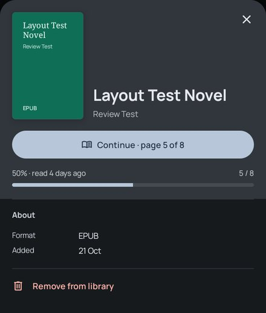

Kavita in one tap, and book pages with something to say
Two things you found on the tablet, and what is behind them. Kavita's place in the rail opens a menu instead of Kavita, and a Grimmory book's page has no description and no length. Card 2 picks where Kavita's collections and reading lists go once the menu is gone (A, B or C); the rest are Do / Maybe / Don't. Screens are drawn at real sizes (1 px = 1 dp, scaled to fit) in Graphite. Picks save to this page.
0 of 5 picked
Picks are kept in this browser until the page's store answers.
What's there today (0.19.0)
The rail: Kavita opens a menu; Home is a second tap. Drawn from the code (the emulator has no Kavita server).
The drawer: Kavita is a heading over three rows.

An EPUB's page on the emulator: About is Format and Added. A Grimmory EPUB adds Language and Publisher at most.
Kavita's menu. Every other source opens in one tap; Kavita's rail item opens a menu of Home, Collections and Reading lists (KavitaRailItem), and the drawer draws Kavita as a heading over the same three rows. Kavita's home also has a Kavita lists chip in its filter row that opens every collection and reading list in a searchable dialog, so the lists are reachable twice, in two different looks.
No description from Grimmory. The app asks Grimmory for its books with withDescription=false, both for the whole catalog and for a single book, so a description never arrives. The book page would show one if it had it.
No length for EPUBs. Grimmory does send a page count, but the book page shows Pages only for comics and PDFs. An EPUB gets "Chapters" once it has been opened in the reader, and nothing before.
Kavita descriptions, likely the same. Kavita books take their description from each chapter's summary. Kavita usually keeps the summary on the series, so many Kavita books probably show none either (not checked against your server).
1 · Kavita opens in one tap, like every other source
feature:navigation
The rail: Kavita is a plain item.
The drawer: one Kavita row.
Tapping Kavita opens Kavita's home, with no menu. Its pill stays lit on every Kavita page: a series, a collection, a reading list.
In the drawer Kavita is one row in the source list, the same as Grimmory and Local. The heading and the three indented rows go.
Back from a collection or a reading list returns to Kavita's home, as it does from a series today.
2 · Where Collections and Reading lists live
pick A, B or C
A. Two more tabs in the shelf strip, beside In progress and Up next. See all opens today's covers grid.
B. Only the Kavita lists chip and its dialog, as today. The covers grids go.
C. Two links under the title, each opening today's covers grid.
A puts the lists where you already look for what to read next, with their covers, and adds no new screen. A collection shows as a stack of its series, a reading list as its cover. A tab shows only when Kavita has lists of that kind, and the strip remembers the last tab, as today.
B is the smallest change: nothing new is drawn. You see a name and a count before opening a list, never its cover, and the covers grids are removed.
C keeps the covers grids as pages of their own (with today's Collections / Reading lists switch) and adds the least to the home.
In A and C the Kavita lists chip goes, since it opens the same lists a second way. Opening a list stays as it is in all three: its description and counts, Up next, then its books.
3 · The book page asks for the description when it opens
data:grimmory, data:kavita
The first time: three faint lines while Grimmory answers.
Then, and every time after: four lines and More.
The catalog sync stays light: it fetches thousands of books without descriptions on purpose. When a Grimmory book's page opens, the app asks for that one book with its description (GET /api/v1/books/{id}?withDescription=true), shows it and keeps it with the book, so next time, and offline, it is there at once.
While it loads, three faint lines hold its place under About, usually for well under a second at home. If the book has none, or the server can't be reached, About starts with the genres and facts, as today.
Kavita: when a chapter has no summary of its own, the page uses its series' summary, asked for once per series. A Kavita series page gets it too.
Stump already sends summaries with its books, and local EPUBs read theirs from the file. No change there.
4 · An EPUB says how long it is
LibraryBookPageModel
A Grimmory EPUB never opened.
The same book after the reader has counted its chapters.
"Pages" for an EPUB when the server gives a page count: Grimmory's metadata, and Stump's where its book metadata has one. It is the printed edition's length (352), on the row comics and PDFs already use.
"Chapters" joins it once the reader has counted them, as today.
Kavita EPUBs keep chapters only: Kavita's page count for an EPUB is its number of files, not pages.
5 · The year it came out
new data · Room v30
About with the year, under Publisher.
"Published 2021" from Grimmory's published date, Kavita's release year and Stump's year. A book whose server doesn't know it shows no row.
The app doesn't read this today, so it is one more stored field on server books (a Room migration to v30) and a little parsing per source.
Server books' About would then read Format, Pages, Language, Publisher, Published, Added, which is close to what Grimmory's own book page shows.